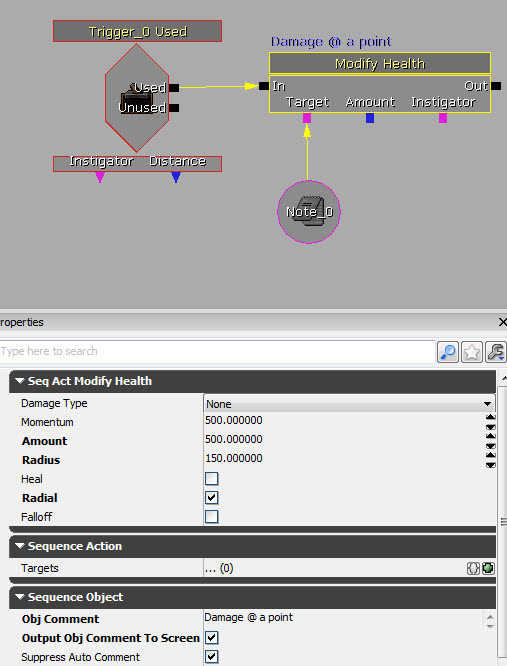
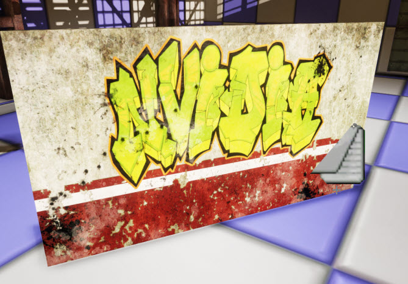

UDN
Search public documentation:
APEXDestructionKR
English Translation
日本語訳
中国翻译
Interested in the Unreal Engine?
Visit the Unreal Technology site.
Looking for jobs and company info?
Check out the Epic games site.
Questions about support via UDN?
Contact the UDN Staff
日本語訳
中国翻译
Interested in the Unreal Engine?
Visit the Unreal Technology site.
Looking for jobs and company info?
Check out the Epic games site.
Questions about support via UDN?
Contact the UDN Staff
UE3 의 APEX Destruction
문서 변경내역: David Schoemehl 작성. 홍성진 번역.
개요
툴 구하기
튜토리얼
UE3로 APEX Destruction 임포트하기
- 머티리얼 에디터 에서 Used With APEXMeshes? 플랙을 설정하여 머티리얼을 만듭니다.

- PhysXLab 으로 만든 .apx 파일을 임포트합니다.
- Apex Destructible Asset 에 대한 프로퍼티를 열고 Materials 를 부서지는 메시에 사용하려는 UE3 머티리얼로 설정합니다. 이 그림에서 슬롯 0에 외부 머티리얼이, 슬롯 1에 내부 머티리얼이 할당된 것을 확인할 수 있습니다.

레벨에 APEX Destructible Actor 만들기
- 콘텐츠 브라우저에서 Apex Destructible Asset 을 선택하고, 레벨 에디터에서 액터를 놓으려는 곳에 우클릭합니다.
- 적당한 크기로 액터 스케일을 조절합니다.

Apex Destructible Asset 프로퍼티
- Materials 머티리얼 - 이 애셋에 상대적으로 리매핑 가능한 머티리얼 배열입니다.
- FractureMaterials 프랙처 머티리얼 - 각 프랙처 레벨에 대한 프랙처 이펙트입니다.
- DefaultPhysMaterial 디폴트 피지컬 머티리얼 - 이 애셋이 사용할 디폴트 피지컬 머티리얼입니다. 액터의 메시 컴포넌트 안에 피지컬 머티리얼이 정의되어 있다면 그게 대신 사용됩니다.
- CrumbleEmitterName 크럼블(산산조각) 이미터 이름 - 크럼블에 사용할 NxMeshParticleSystem 이름입니다. NxDestructibleAsset 에 정의된(게 있다면) 크럼블 시스템을 덮어씁니다.
- DustEmitterName 더스트(먼지) 이미터 이름 - 프랙처-선 더스트에 사용할 NxMeshParticleSystem 이름입니다. NxDestrctibleAsset 에 정의된(게 있다면) 더스트 시스템을 덮어씁니다.
- DestructibleParameters 디스트럭터블(파괴가능) 파라미터 - 디스트럭터블 프로퍼티 제어용 파라미터입니다. 디스트럭터블이 맞았을 때의 행위, 잔해가 사라지지 않고 애셋에서 얼마나 떨어져나갈 수 있는지, 잔해가 사라지지 않고 얼마나 남아있는지 등의 자세한 세팅이 들어있습니다.
- DamageParameters 대미지 파라미터 - 청크 대미지에 관계되는 파라미터입니다.
- DamageThreshold 대미지 임계값 - 이 이상의 대미지를 입으면 청크가 디스트럭터블에서 프랙처됩(부서져 돌아다닙)니다. NxDestructibleActor::applyDamage 또는 NxDestructibleActor::applyRadiusDamage 에 전해진 값이나, 임팩트를 통해 구합니다. ('forceToDamage' 참고).
- DamageSpread 대미지 퍼짐 - 디스트럭터블이 대미지를 전하는 거리를 조절합니다. 청크에 적용되는 대미지는 전파 거리를 구하고자 DamageSpread 를 곱합니다. 반경 내 모든 청크에는 대미지가 적용됩니다. 각 청크에 적용되는 대미지는 그 적용 위치까지의 거리에 따라 다릅니다. 거리가 0 이면 최대 대미지, 최대 반경에서는 0 대미지 입니다.
- ImpactDamage 임팩트 대미지 - 청크가 NX_DESTRUCTIBLE_TAKE_IMPACT_DAMAGE (임팩트 대미지를 받도록) 설정된 깊이에 있는 경우 (DepthParameters 참고), 청크가 NxScene 에 콜리전이 있으면, ImpactDamage 에 임팩트 포스를 곱한 만큼의 대미지를 받습니다. 디폴트 값은 0 으로, 사실상 임팩트 대미지를 끄는 효과를 냅니다.
- ImpactResistance 임팩트 저항 - 청크가 물리적 접촉으로 인해 임팩트 대미지를 받을 때, (DepthParameters 참고) 접촉이 낼 수 있는 최대 임펄스를 나타냅니다. 유리처럼 약한 머티리얼은 이 값을 낮게 설정하면 부서지는 동안 무거운 것들이 통과해 다니게 됩니다. 주: 0 으로 설정하면 임펄스 상한을 없애는, 즉 무한이 됩니다. 디폴트는 0.0f 입니다.
주: 2012-11 QA UDK 릴리스에서 이 파라미터를 0 이외의 것으로 설정하면 APEX 안에서 교착상태에 빠집니다. 이 부분은 APEX 1.2.3 릴리스에 수정될 것입니다. - DefaultImpactDamageDepth 디폴트 임팩트 대미지 깊이 - 디폴트로 임팩트 대미지는 이 깊이에만 적용됩니다. DepthParameters 에서 특정 깊이에 대해 덮어쓸 수는 있습니다. 음수면 임팩트 대미지는 꺼집니다.
- DebrisParameters 잔해 파라미터 청크 - 잔해-레벨 세팅에 관계되는 파라미터입니다.
- DebrisLifetimeMin 잔해 수명 최소 "잔해 청크" (debrisDepth 참고)는 잔해 청크가 아닌 것에서 분리된 이후 몇 초가 지나면 소멸됩니다. 실제 수명은 모듈의 LOD 세팅에 따라 이 두 값을 보간해 구합니다. 수명 개념을 끄려면 플랙 필드의 NX_DESTRUCTIBLE_DEBRIS_TIMEOUT 플랙을 지우십시오. 최대치가 최소치보다 작으면, 그 둘 모두에 중간값을 사용합니다. 디폴트 최소값은 1.0, 최대값은 10.0f 입니다.
- DebrisLifetimeMax 잔해 수명 최대 - "
- DebrisMaxSeparationMin 잔해 MaxSeparation 최소 - "잔해 청크" (debrisDepth 참고) 는 원점에서 maxSeparation 거리 이상 떨어지면 소멸됩니다. 실제 maxSeparation 은 모듈 LOD 세팅에 따라 이 두 값을 보간해 구합니다. maxSeparation 을 끄려면 플랙 필드에 있는 NX_DESTRUCTIBLE_DEBRIS_MAX_SEPARATION 플랙을 지우십시오. 최대치가 최소치보다 작으면, 그 둘 모두에 중간값을 사용합니다. 디폴트 최소값은 1.0, 최대값은 10.0f 입니다.
- DebrisMaxSeparationMax 잔해 MaxSeparation 최대 - "
- ValidBounds 유효 범위 "잔해 청크" (debrisDepth 참고) 는 원점에서 maxSeparation 에 원본 디스트럭터블 애셋 크기를 곱한 것보다 더 멀리 떨어지면 소멸됩니다. 실제 MaxSeparation 은 모듈 LOD 세팅에 따라 이 두 값을 보간해 구합니다. maxSeperation 을 끄려면 플랙 필드의 NX_DESTRUCTIBLE_DEBRIS_MAX_SEPARATION 플랙을 지우십시오. 최대치가 최소치보다 작으면, 그 둘 모두에 중간값을 사용합니다. 디폴트 최소값은 1.0, 최대값은 10.0f 입니다.
- AdvancedParameters 고급 파라미터 - 그리 자주 사용되지 않는 파라미터입니다.
- DamageCap 대미지 상한 청크에 적용되는 대미지 양을 제한합니다. 엄청 큰 대미지를 받았다고 전체 Destructible 이 산산조각나지는 않게 하는 데 요긴하게 쓰입니다. 임팩트 대미지를 사용하고, 그 대미지 양은 임팩트 포스에 비례할 때 종종 발생합니다. (forceToDamage 참고)
- ImpactVelocityThreshold 임팩트 속도 임계값 - 리짓 바디가 서로의 안에 스폰되면 큰 임팩트 포스가 생길 수 있습니다. 이 경우 그 두 오브젝트의 상대 속도는 낮을 것입니다. 이 변수로 사용자가 임팩트의 최소 속도 임계값을 설정해서 임팩트 포스가 고려될 수 있도록 오브젝트가 최소 속도로 움직이도록 합니다.
- MaxChunkSpeed 최대 청크 속력 - 0 보다 크면 청크의 속력은 이 값을 넘지 못합니다. 이 기능을 끄려면 0 으로 설정하십시오. (디폴트)
- MassScaleExponent 질량 스케일 지수 - MassScale 참고. 1 미만의 값은 각기 다른 질량 비율을 줄이는 효과가 있습니다. 이 지수가 0 에 가까워 질 수록 비율도 "평이해" 집니다. (디스트럭터블 청크가 쌓인 곳처럼) 매우 많은 리짓 바디가 상호작용할 때의 PhysX 수렴에 도움이 됩니다. 유효 범위: [0,1]. 디폴트 = 0.5.
- MassScale 질량 스케일 - 다이내믹 청크 아일랜드는 그 질량을 MassScale 로 나누고, MassScaleExponent 만큼 거듭제곱하여 올린 다음, MassScale 로 곱합니다. MassScaleExponent 참고. 유효 범위: (0,무한). 디폴트 = 1.0.
- FractureImpulseScale 프랙처 임펄스 스케일 - 청크가 부서질 때 그 노멀을 따라 임펄스 포스를 적용하는 데 사용되는 스케일 인수입니다. 부서지면서 조각을 "밀어내기" 위해 사용됩니다.
- SupportDepth 서포트 깊이 - 서포트 그래프를 만들 청크 계층구조 깊이입니다. 깊이가 깊을 수록 자세한 서포트가 가능하지만, 계산 부하도 무겁게 걸립니다. 서포트 깊이 아래 청크는 서포트되지 않습니다.
- MinimumFractureDepth 최소 프랙처 깊이 - 이 깊이 미만의 청크는 부서져 돌아다니지 않습니다.
- DebrisDepth 잔해 깊이 - "잔해"로 간주할 청크 계층구조 깊이입니다. 이 깊이 이하의 청크는 수명같은 여러가지 잔해 세팅 영향을 받습니다. 값이 음수면 잔해로 간주되는 깊이는 없습니다. 디폴트 값은 -1 입니다.
- EssentialDepth 필수 깊이 - 이 계층구조 깊이까지의 청크는 항상 처리됩니다. 이 청크는 게임플레이든 비주얼이든 필수적인 것으로 간주됩니다. 최소값은 0 으로, 0 레벨 청크는 항상 필수적인 것으로 간주됩니다. 디폴트 값은 0 입니다.
- Flags 플랙 - NxDestructibleParametersFlag 에 정의된 플랙 모음입니다.
- ACCUMULATE_DAMAGE 누적 대미지 설정하면 청크는 적용된 대미지를 "기억하여" 대미지 임계값 이하 대미지를 여러번 입어도 청크가 부서지게 만듭니다. 설정하지 않으면 대미지 임계값을 넘는 대미지를 한 방 세게 받아야 청크가 부서집니다.
- ASSET_DEFINED_SUPPORT 애셋 정의 서포트 - 설정하면 (NxDestructibleChunkDesc::isSupportChunk 를 통해) "support" 청크로 태그된 청크는 static destructibles 에 환경적으로 지지됩니다. 주: ASSET_DEFINED_SUPPORT 와 WORLD_SUPPORT 둘 다 설정된 경우, 청크는 "support" 태깅 && NxScene 의 스태틱 지오메트리에 겹쳐야지만 환경적으로 지지됩니다.
- WORLD_SUPPORT 월드 서포트 - 설정하면 NxScene 의 스태틱 지오메트리에 겹치는 청크는 static destructibles 에 환경적으로 지지됩니다. 주: ASSET_DEFINED_SUPPORT 와 WORLD_SUPPORT 둘 다 설정된 경우, 청크는 "support" 태깅 && NxScene 의 스태틱 지오메트리에 겹쳐야지만 환경적으로 지지됩니다.
- DEBRIS_TIMEOUT 잔해 시간초과 - "잔해" 깊이 (NxDestructibleParameters::debrisDepth 참고) 이하의 청크에 시간초과를 적용할지 입니다. 수명은 디스트럭터블 모듈의 LOD 세팅에 따라 NxDestructibleParameters::debrisLifetimeMin 와 NxDestructibleParameters::debrisLifetimeMax 사이의 값입니다.
- DEBRIS_MAX_SEPARATION 잔해 최대 분리 - "잔해" 깊이 (NxDestructibleParameters::debrisDepth 참고) 이하의 청크가 원점에서 너무 멀어지면 제거할지 입니다. maxSeparation 은 디스트럭터블 모듈의 LOD 세팅에 따라 NxDestructibleParameters::debrisMaxSeparationMin 에서 NxDestructibleParameters::debrisMaxSeparationMax 사이의 값입니다.
- CRUMBLE_SMALLEST_CHUNKS 크럼블(부스러기) 최소 청크 - 설정하면 최소 청크를 (NxDestructibleActorDesc 에) 크럼블 파티클 시스템이 지정되어 있으면 유체 부스러기로, 없으면 그냥 청크를 제거해서, 더욱 잘게 쪼갤 수 있습니다. 주: "최소 청크"는 보통 프랙처 계층구조의 최하위 레벨로 정의됩니다. 그러나 NxModuleDestructible::setMaxChunkDepthOffset 를 0 이외의 값으로 호출한 경우, 그보다 높은 레벨도 가능합니다.
- ACCURATE_RAYCASTS 정확한 레이캐스트 - 설정하면 NxDestructibleActor::rayCast 함수는 가장 가까이 보이는 청크 안에서 자식 청크로 콜리전 검사를 합니다. 부모 콜리전 볼륨이 그래픽 메시에 딱 맞아 떨어지지 않는 경우 더 나은 레이캐스트 위치와 노멀을 구하는 데 사용됩니다. 그러나 반환되는 청크 인덱스는 항상 교차된 보이는 부모 것이 됩니다.
- USE_VALID_BOUNDS 유효 범위 사용 - 설정하면 NxDestructibleParameters 의 ValidBounds 필드가 사용됩니다. 이 범위는 디스트럭터블 액터의 원점으로 (로테이트나 스케일은 안되고) 트렌슬레이트 됩니다. 청크나 청크 아일랜드가 이 범위를 벗어나면 소멸됩니다.
- FORM_EXTENDED_STRUCTURES 확장 구조물 형성 - 애초에 스태틱이었던 경우, 디스트럭터블은 마찬가지로 이 플랙이 설정된 스태틱 디스트럭터블과 접해있을 때 확장 지지 구조물의 일부가 됩니다.
- DepthParameters 깊이 파라미터 - 주어진 레벨의 모든 청크에 적용되는 파라미터입니다. (NxDestructibleDepthParameters 참고). 배열의 [0] 요소는 (프랙처되지 않은) 0 레벨 청크에, [1] 요소는 1 레벨 청크에 식으로 적용됩니다.
-
- ImpactDamageOverride 임팩트 대미지 덮어쓰기 - 덮어쓰기 옵션(EImpactDamageOverride) 중 하나를 선택하지 않는 한, DefaultImpactDamageDepth 까지의 청크는 임팩트 대미지를 받습니다.
-
- DynamicChunksDominanceGroup 다이내믹 청크 도미넌스 그룹 - 부서질 때 다이내믹 청크가 속할 우세 그룹 옵션입니다 (31 초과 0 미만이면 무시). 디폴트는 -1 로, 꺼짐 입니다.
- UseDynamicChunksGroupsMask 다이내믹 청크 그룹 마스크 사용 - 다이내믹 청크에 DynamicChunksChannel 과 DynamicChunksCollideWithChannels 을 사용할지 말지 입니다. 거짓이라면 ApexDestructibleActor 용으로 정의된 RB 채널이 스태틱이든 다이내믹이든 모든 청크에 대해 사용됩니다. 참이라면 다이내믹 청크에는 DynamicChunksChannel 과 DynamicChunksCollideWithChannels 가 사용됩니다.
- DynamicChunksChannel 다이내믹 청크 채널 - UseDynamicChunksGroupsMask 가 참일 때, 리짓 바디 콜리전에 대해서 다이내믹 청크가 어떤 유형의 오브젝트로 간주되어야 할지를 나타내는 열거형입니다.
- DynamicChunksCollideWithChannels 다이내믹 청크가 충돌하는 채널 - UseDynamicChunksGroupsMask 가 참일 때 다이내믹 청크가 충돌하게 될 오브젝트 유형입니다.
- DamageParameters 대미지 파라미터 - 청크 대미지에 관계되는 파라미터입니다.
깨진 청크 처리
많은 분들이 바닥에 닿은 청크를 사라지게 만드는 기능에 대해 문의해 주셨습니다. 아쉽게도 그 작업은 쉽지가 않은데, 디스트럭터블은 퍼포먼스 향상을 위해 하나의 드로 콜로 그리기 때문입니다. 씬에서 청크를 제거하기에 더 좋은 방법이라면, 2012-07 월 미만 버전의 경우 BaseEngine.ini, 2012-07 월 이후 버전의 경우 BaseSystemSettings.ini 에 위치한 ApexDestructionMaxChunkIslandCount 나 ApexDestructionMaxShapeCount 를 사용하는 것입니다. 그러면 씬에 최대로 표시되는 청크 수를 조절할 수 있습니다. 한계에 도달하면 APEX 는 현재 위치를 기준으로 화면 공간을 가장 적게 차지하는 청크를 제거하기 시작합니다. 그 결과 플레이어에게 가까이 있는 커다란 청크는 가중치가 높아 멀리 있는 작은 청크보다 씬에 오래 남아있게 됩니다. 최종적인 결과는 다른 청크에 자리를 꼭 내어줄 필요가 있지 않고서야 영원히 남아있게 되는 청크가 있기 때문에, 좀 더 지속적인 파괴 효과를 얻을 수 있습니다. 시스템이 처리할 수 있는 청크 수는 GPU 리짓 바디 가속을 사용하면 향상시킬 수 있습니다. (아래 "리짓 바디 활성화" 부분 참고)부서지는 청크 수 조절하기
다음 값은 UnrealEngine3\Engine\Config\BaseEngine.ini 에서 수정할 수 있습니다:- ApexDestructionMaxChunkIslandCount APEX 파괴 최대 청크 아일랜드 수 - 부서지는 청크 생성 허용 최대 개수입니다. 청크가 적으면 피직스 드레인되는 양도 줄어듭니다.
- ApexDestructionMaxShapeCount APEX 파괴 최대 셰이프 수 - 셰이프 생성 허용 최대 개수입니다. 최소한 청크 수와 일치해야 합니다.
청크 충돌 방지
캐릭터 콘트롤러가 바닥의 청크에 충돌하지 않게 하려면 Pawn.uc 에 bMoveIgnoresDestruction=true 설정을 하고 다시 컴파일합니다.GPU 리짓 바디 활성화
GPU 리짓 바디를 활성화시키기 위해서는 UnrealEngine3\Engine\Config\BaseEngine.ini 나 UnrealEngine3\Engine\Config\BaseSystemSettings.ini 에 다음과 같은 설정을 해 줘야 합니다. 주: GRB 는 2012-07 QA 빌드에서 깨집니다.- ApexGRBEnable=false
- ApexGRBGPUMemSceneSize=128 (최대 256, 씬과 디스트럭터블 수에 따라 가변)
- ApexGRBGPUMemTempDataSize=128 (최대 256, 씬과 디스트럭터블 수에 따라 가변)
- bDisablePhysXHardwareSupport=True (BaseEngine.ini)
무기 대미지 수정
UDK_APEXDamageMap 이 있습니다. 자체 게임용 대미지 맵을 새로 만들 수도 있습니다. 무기 참조는 레벨 로드시의 참조 문제를 피하기 위해 문자열로 이루어집니다. 자체 대미지 맵을 만들었다면 그 이름을 DefaultEngine.ini 에 설정해 주십시오:
ApexDamageParamsName=UDK_APEXDamageMap.UDKDamageMap
- Override Mode (오버라이드 모드)는 APEX 에 대해 덮어쓰거나 디폴트 웨폰 세팅에 추가합니다.
- Base Damage (베이스 대미지)는 무기가 입히는 피해 양입니다.
- Radius (반경)은 대미지 반경이 얼마나 큰가 입니다.
- Momentum (운동량)은 무기가 부서진 조각에 가할 에너지의 양(으로 얼마나 멀리 날아가게 할지)입니다.

Destruction 용 키즈멧 스크립팅
 점 파괴
더 나은 사용 예는 다른 액터를 사용하여 피해 위치를 지정하는 것으로, 아래 예제에서는 "note" 를 사용합니다.
점 파괴
더 나은 사용 예는 다른 액터를 사용하여 피해 위치를 지정하는 것으로, 아래 예제에서는 "note" 를 사용합니다.
- 피해를 입히려는 원점에 note 를 놓은 다음 그것을 Modify Health 액션의 Target 노드에 붙입니다.
- (피해 임계값에 직접 연관된) Amount, Radius 를 설정하고 Radial 플랙을 누릅니다.

실제 상황 아래는 Destruction 우하단 구석에 note 를 놓은 모습과 그 결과 화면입니다!

디스트럭션 부서뜨리기
이 기법을 통해 청크를 파티클로 부서뜨리는 효과를 흉내낼 수 있습니다:- 잔해 깊이를 디스트럭션 내 최종 깊이로 설정합니다.
- 잔해 타임아웃을 켜고 매우 작은 값으로 설정합니다.
- 청크가 사라지면서 최소 깊이의 프랙처 머티리얼이 스폰됩니다.
콘솔에서의 디스트럭션 팁
APEX Destruction 은 콘솔에서 사용 가능하며, SDK 다운로드 일부에 포함되어 있어 콘솔에서 사용가능한 APEX 샘플이 몇 가지 있으며, 현재 UE3 용 샘플 테스트 맵을 작업중입니다. 실제 파괴가능 그래픽 메시는 메모리 사용량이 늘어날 수 있기에, 콘솔용으로 추천하는 방법은 이렇습니다:- 단순한 메시를 사용하되, 대략 10 조각 이하로만 쪼갭니다.
- PhysXLab 에서 청크마다 컨벡스 헐이 하나씩만 있도록 콜리전 퀄리티를 낮춥니다.
- 노이즈 프랙처는 메시 사이즈가 매우 커지니 사용을 피합니다.